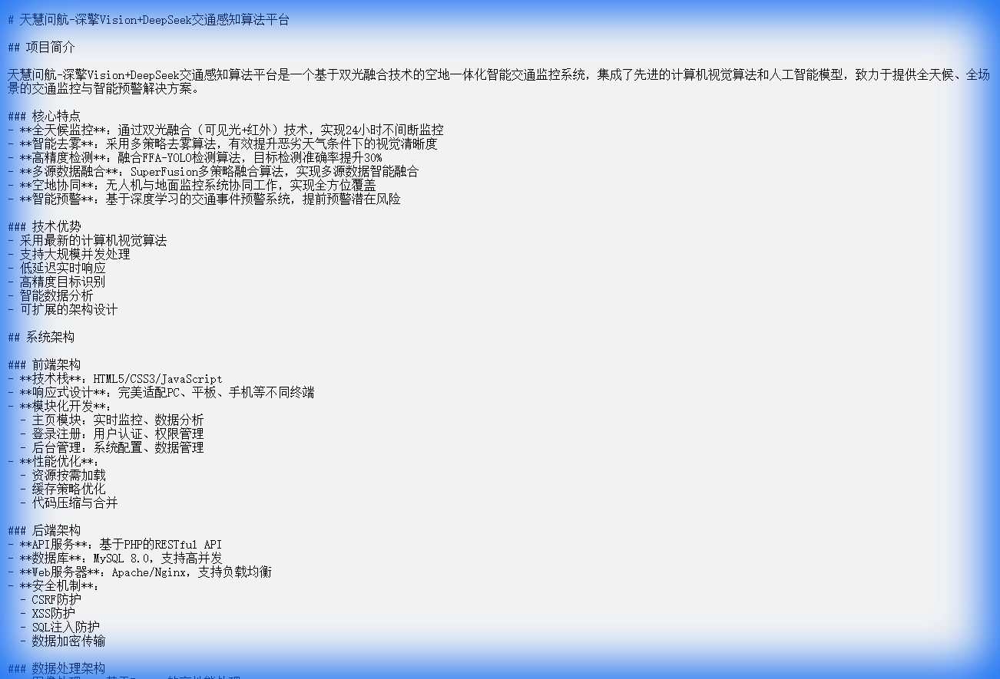

双光融合感知
通过可见光与红外热成像互补，面向夜间、雨雾等复杂场景开展目标检测与图像增强。
Python · OpenCV · 双光融合
雨雾、夜间等低能见度场景给道路监测带来挑战。项目融合红外与可见光感知，通过图像增强、目标检测与多模态融合算法，识别车辆与道路情况，并将检测结果组织为可视化交通监测系统。
系统围绕交通异常事件、车辆目标与行为分析，结合大模型和法规知识库，提供从感知识别到信息解释的支持。
负责 AI 模块的设计与实现，主要工作包括：
通过可见光与红外热成像互补，面向夜间、雨雾等复杂场景开展目标检测与图像增强。
Python · OpenCV · 双光融合
结合目标检测、轨迹分析与大模型语义理解，对交通行为进行识别，并关联法规知识。
YOLO · DeepSeek · 知识库
汇集感知结果与分析信息，为交通事件、车辆目标及行为提供直观的展示入口。
Vue.js · WebGIS · ECharts
